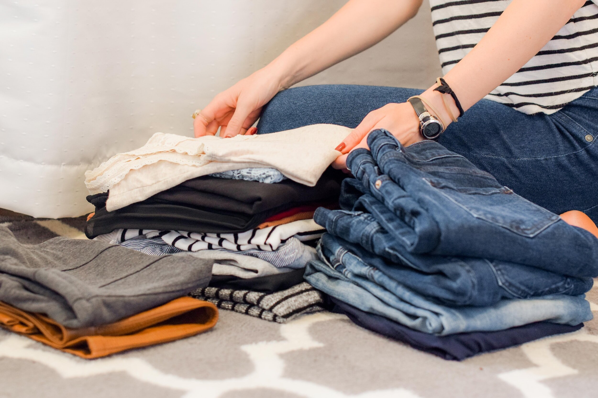
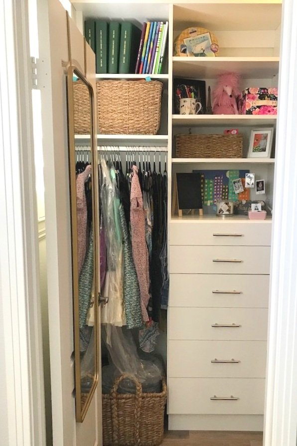

Closet Organizing- Quick Tips and Tricks
Is your closet a cluttered mess? Do you struggle to find your favorite clothes or waste time searching for that missing shoe? It's time to transform your closet into an organized oasis where everything has its place. In this article, we'll share easy tips and tricks to help you declutter and organize your closet efficiently.
Start with a Clean Slate: The first step in organizing your closet is to empty it completely. Remove all your clothes, shoes, accessories, and hangers. This blank canvas allows you to see the space you're working with and helps you assess what you have.
Declutter Ruthlessly: Now that your closet is empty, it's time to declutter. Be ruthless in your decision-making:
Keep: Only keep items you love, wear regularly, and that fit well.
Donate or Sell: If you haven't worn something in over a year, it's time to part ways. Consider donating gently used items or selling them online.
Toss: Discard items that are damaged, stained, or beyond repair.

Categorize Your Clothing:
Sort your clothes into categories. This can include tops, bottoms, dresses, outerwear, and so on. By categorizing, you'll know where to find specific items quickly.
Invest in Quality Hangers :
Invest in uniform, velvet hangers to save space and create a cohesive look. Avoid wire or plastic hangers that can cause clothing to stretch or loose shape.
Utilize Vertical Space: Maximize vertical space by installing shelves, cubbies, or hooks for accessories, shoes, and bags. Over-the-door shoe organizers can also free up valuable floor space.
Use Drawer Dividers:Drawer dividers or organizers are a game-changer for smaller items like socks, underwear, and accessories. They prevent clutter and make it easier to locate what you need.
Color Coordinate: Arrange your clothes by color within each category. This makes it visually pleasing and helps you quickly find what you're looking for.

Seasonal Rotation :
Consider rotating your wardrobe seasonally. Store off-season clothes in bins or vacuum-sealed bags to free up space for current season items.
Store Bulky Items :
For bulky items like winter coats, use sturdy hangers or hooks. You can also store them in garment bags to protect them and save space.
Label Everything::
Use labels or tags on bins, baskets, or shelves to identify the contents. This is especially helpful for items like scarves, belts, or accessories.
Regular Maintenance: Make it a habit to regularly review and declutter your closet. Donate or sell items that you no longer need to keep it organized and clutter-free.
By following these easy tips and tricks, you'll be well on your way to a beautifully organized closet. Remember that an organized closet not only saves you time and stress but also helps you make the most of your wardrobe. Happy organizing!